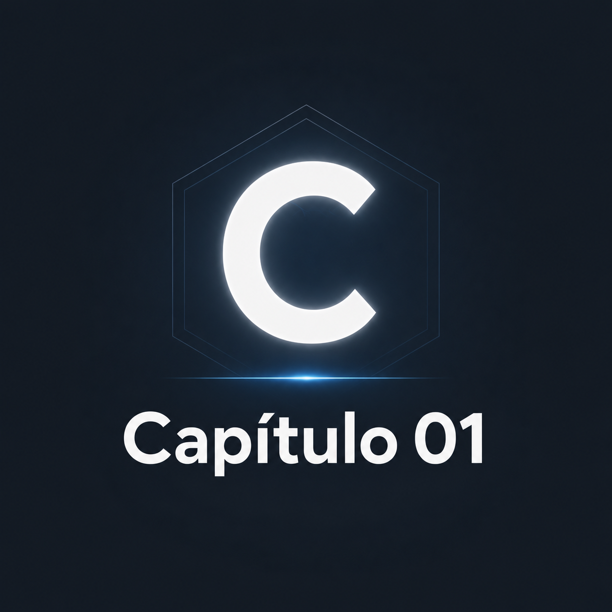

Resumo Capítulos - Linguagem C de Luis Damas
Introdução
Era inicialmente uma linguagem descentralizada em 1972, resultada das evolução de outra linguagem de Ken Thompson chamada de B. Por ser uma linguagem dispersa, muitas organizações usavam padrões diferentes, até que se juntaram para garantir um padrão para o C
Mais detalhes
Capítulo 01
Programa é uma sequência de códigos lidos por máquina que atenda ao compilador, que visa responder certo problema. Em C, todo o programa é executado na função main() e todo o código deve ser colocado entre {} sendo chamado de bloco.
Mais detalhes